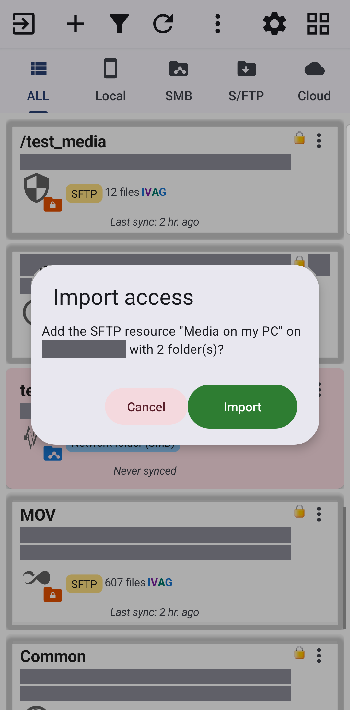
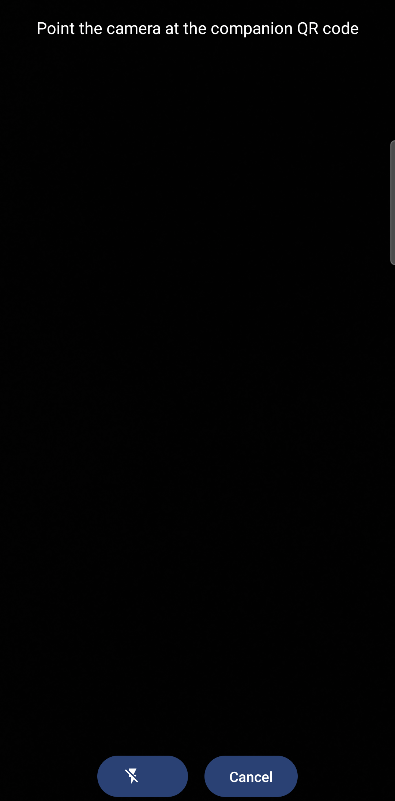

Поширення папок ПК через Fast Media Sorter для Windows
Fast Media Sorter for Windows публікує папки ПК так, що цей застосунок відкриває їх без жодної адреси сервера для введення - заведіть їх файлом чи скануванням QR-коду, і з'єднання йде за телефоном поза домашню мережу й назад.
Чому вам це сподобається
Сімейні відео лежать на ПК під телевізором, а не на телефоні, і налаштовувати спільну папку вручну - адреса сервера, ім'я користувача, пароль, порт - саме та рутина, якої хочеться уникнути. Fast Media Sorter for Windows - невелика програма для того ПК: вкажіть їй папку, і цей застосунок відкриє її, більше нічого вводити не треба.
Ця сторінка про бік companion-застосунку: як завести спільну папку, як з'єднання лишається робочим, коли ви виходите з дому, і що застосунок каже, коли не може дотягнутися до ПК. Ручне налаштування серверної папки замість цього - у Підключенні серверів SFTP та FTP; зворотний напрямок - поширення папок із самого телефону - у Перетворенні телефону на SFTP-сервер.
- ✓ Цей застосунок у будь-якій редакції, крім Lite і FOSS - див. вужчі примітки під кожним кроком нижче.
- ✓ Fast Media Sorter for Windows, встановлений на ПК, з уже відкритою з нього хоча б однією папкою.
- ✓ Або збережений ним файл конфігурації, або його QR-код і телефон із камерою.
- ✓ Щоб дотягнутися до папки поза домом: власник ПК уже налаштував переспрямування портів на роутері або увімкнув власний інтернет-доступ companion-застосунку.
Знайомство з Fast Media Sorter for Windows
Fast Media Sorter for Windows - програма для ПК, не для телефону: уся її робота - вибрати одну-дві папки й опублікувати їх так, щоб цей застосунок міг їх відкрити, без NAS і без ручного введення адреси сервера. Сторінка мережевих джерел у першому майстрі привітання вже згадує її коротким нагадуванням - «Медіа на ПК з Windows? Fast Media Sorter for Windows розшарить ці папки сюди за кілька кліків - без налаштування сервера.» - поруч із кнопкою Завантажити для Windows, що відкриває її сайт.
Усе, чим вона ділиться, приходить сюди як звичайний SFTP ресурс, лише для читання або для запису, і лягає на головний екран поруч з усім іншим - учити окремий тип «папка companion» не потрібно.
Заведіть спільну конфігурацію одним дотиком
На головному екрані торкніться Додати, щоб відкрити Додати ресурс. Над чотирма картками типів ресурсів стоять дві кнопки, і та сама пара повторюється в заголовку самої картки SFTP / FTP: Імпорт із файлу і Імпорт за штрих-кодом.
Торкніться Імпорт із файлу і виберіть конфігурацію, яку companion-застосунок зберіг на ПК (передайте її на телефон як завгодно - кабелем, повідомленням у чаті, хмарною папкою). Діалог Імпорт доступу просить підтвердити, наприклад «Додати SFTP-ресурс «ПК у вітальні» на 192.168.1.20 (папок: 2)?», а якщо конфігурація не несе пароля, спершу питає його («Пароль для цього сервера»). Першого разу, коли певний ПК імпортують, і його ще не верифіковано, діалог також попереджає: «Сервер не верифіковано - підключайтеся, лише якщо довіряєте відправнику.» - підключайтеся, лише якщо впізнаєте, звідки файл.
Торкніться Імпортувати, і повідомлення підтвердить, що змінилося: «Додано: Сімейні фото» для однієї нової папки, «Додано ресурсів: 2» для кількох одразу, або «Ресурси вже актуальні», коли ви імпортуєте той самий файл знову і нічого не змінилося.

Замість цього зіскануйте QR-код спарювання
Немає файлу під рукою? Торкніться Імпорт за штрих-кодом у тих самих місцях, що й Імпорт із файлу. Відкриється камера з підказкою «Наведіть камеру на QR-код companion-застосунку» і кнопкою Спалах для темної кімнати; наведіть її на QR-код, який companion-застосунок показує на екрані ПК. Результат - той самий діалог Імпорт доступу, що й для файлу, бо обидва шляхи ведуть до одного імпорту.
Сканування потребує камери, тож застосунок питає дозвіл саме тут: «Для сканування QR-коду companion-застосунку потрібна камера.» Ця кнопка прихована на пристроях без камери і в редакції VR - у шолома немає того, чим може скористатися CameraX - і там єдиний шлях усередину - Імпорт із файлу.

Прочитайте посібник із налаштування ПК прямо з телефону
Ще нічим не поділилися, або не впевнені, що бік ПК налаштовано правильно? Торкніться Як опублікувати папки ПК для Android - вона сидить прямо в заголовку форми SFTP / FTP на Додати ресурс, і ще раз у Налаштуваннях, тож так само доступна, коли імпортувати ще нічого. Обидві відкривають власний посібник із налаштування companion-застосунку у вашому браузері.
Це посилання з'являється в редакціях Standard, noLegal, Photos і Legacy. Там, де його немає, обидві кнопки імпорту вище все одно працюють, щойно бік ПК налаштовано.
Чому папка продовжує відкриватися, хоч би де ви були
Папка companion-застосунку пам'ятає не один спосіб дотягнутися до ПК - адресу у вашому домашньому Wi-Fi і, щойно власник ПК налаштував переспрямування портів чи власний інтернет-доступ companion-застосунку, адресу, що працює звідусіль. Застосунок завжди спершу пробує ближчу і сягає далі лише за потреби, тож та сама папка продовжує відкриватися, поки телефон переходить між домашнім Wi-Fi і мобільними даними - без повторного додавання, без повторного сканування коду.
*Редакція Standard.* Телефон також слухає, чи не оголошує себе companion-застосунок у локальній мережі. Якщо ПК змінив адресу, або відсканований QR-код застарів, застосунок усе одно його знаходить - за тим самим відбитком ключа, якому вже довіряє, а не за адресою, яка могла переїхати.
Коли можна ще й додавати та видаляти, а не тільки дивитися
*Редакція Standard.* Папку можна поділити з companion-застосунку з правом запису. Коли так, цей застосунок може вивантажувати в неї файли, перейменовувати їх, видаляти й переміщати в неї файли, точно як у будь-якому іншому мережевому ресурсі. Папка, поділена без цього прапорця, або поділена старішою версією companion-застосунку, лишається лише для перегляду, як і раніше.
Якщо спільну папку не вдається дотягнутися
Коли папку companion-застосунку чи мережеву SFTP-папку не вдається дотягнутися, повідомлення, яке ви бачите, відображає стан з'єднання прямо зараз, а не запис, зроблений ще тоді, коли папку вперше поділили - доступно в кожній редакції, що вміє тримати мережевий чи SFTP-ресурс (усі, крім Lite).
*Редакція Standard.* Повідомлення прямо каже, що спробувати: «Не вдалося дотягнутися до спільної папки. У тій самій мережі Wi-Fi, що й ПК, з'єднання відновлюється саме; з іншої мережі ПК має дозволити доступ - налаштуйте переспрямування портів на роутері або інтернет-доступ у companion-застосунку.»
Браузер файлів відкрито на недосяжному SFTP-ресурсі companion-застосунку, замість списку файлів показано повідомлення з порадою.
Що ви отримаєте
Папки ПК лягають на головний екран поруч з усім іншим, додані вибором файлу чи скануванням коду замість введення адреси сервера, і продовжують відкриватися незалежно від того, чи ви в домашньому Wi-Fi, чи поза домом на мобільних даних. Коли якусь не вдається дотягнутися, застосунок каже чому, а не просто виснажує тайм-аут.
Поради та усунення несправностей
- Налаштовуєте сервер натомість вручну? Підключення серверів SFTP та FTP охоплює введення хоста, імені користувача й SSH-ключа самостійно.
- Хочете ділитися з телефону натомість? Перетворення телефону на SFTP-сервер охоплює зворотний напрямок - цей телефон як той, до якого підключаються.
- Папка companion-застосунку - усе одно мережевий ресурс під капотом. Огляд у Додаванні мережевих папок і хмарних сховищ як джерел охоплює кеші й мініатюри, що тримають швидким будь-яке мережеве місце.